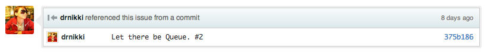
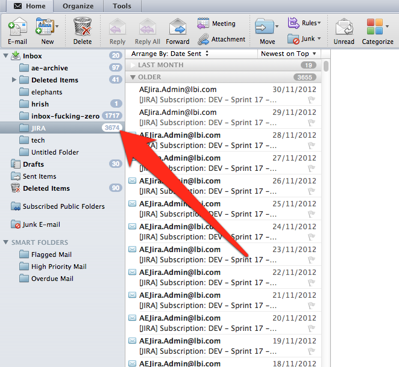

Hi!
- Lead Developer, DivX, WorkHabit
- Technical Architect, LBi NYC
What's a team?
- Developers
- 1+ PM
- Tech lead
- 3 – 4 creative / editorial / UX
- Clients / stakeholders
- QA
- Mystery people
Your team is everyone you talk to about the project.
What's the
VERY BIG REAL LIFE GOAL?
- SHIP
- Keep a team to ship again
What's the touchy feely goal?
- Transparency
- Avoid confusion and frustration
- Prevent burnout
Is your team okay?
- Here, just use my login.
- Um, we're waiting on the client.
- I've got that in an email somewhere. I'll forward it to you.
- Did you not see the updated comps?
- Let me check basecamp. It's on basecamp
- Basecamp
Things You Must Value #1
Transparency
Things You Must Value #2
Structure
Things You Must Value #3
Future You
Things You Must Have #1
Version Control
(Use git.)
Things You Must Have #2
A Ticketing System
Minimum functionality
- Connect to version control

- Connect to a wiki-type thing
Useful combinations
- Github
- Local git install + gitlab
- Local git + hosted JIRA
- Hosted subversion + hosted JIRA
Harmful combinations
- Anything + basecamp
- Anything + google docs
- Anything homemade
- Anything + nothing
Who me?
Ticketing is for EVERYONE
PMS on team
PMS can have tickets
Need copy give pm tax
They attach
I commit with ref to tax
Feeds into pm change log.
Eeeeasy
Things You Must Have #3
ONE Centralized Documentation Thing
(Not basecamp.)
Skype and email are not
reliable sources of information
Documentation is for everyone.
What the fuck is so secret.?!
Dev Server
seems like overkill until someone wnats to see your work
think about building before you deploy.
Development
Work locally, show communally
Work locally, show individually
Work locally, show communally
Dev Server: dev.example.com
Work locally, show individually
Dev Server: dev.example.com
Nikki's Server:
nstevens.dev.example.com
Nikki’s work on X:
branchX.nstevens.dev.example.com
Things You Must Have #5
Automation
Easy: Information Sharing

Make questions self-answerable
Reducing time interacting
When is next build
when is next push
when are you going to fix the comp
What changed last build
what changed with latest design
Is it too late to whatever
these are
-temporal
-material
or qa/approval related.
Things You Must Have
- Version Control
- Ticketing System
- Centralized Documentation
- Development Servers
- Automation